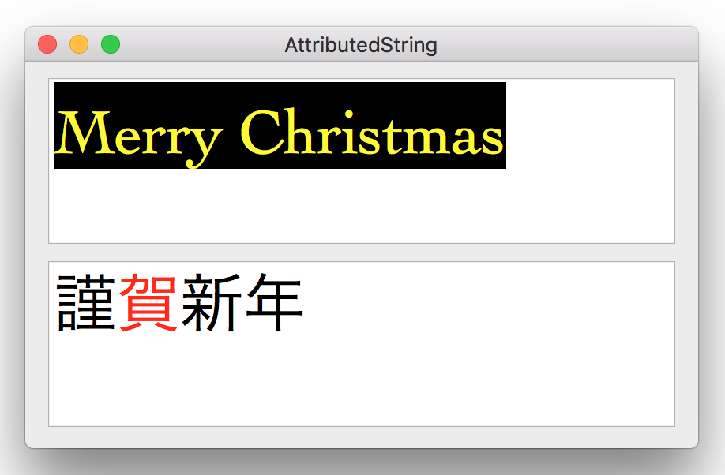
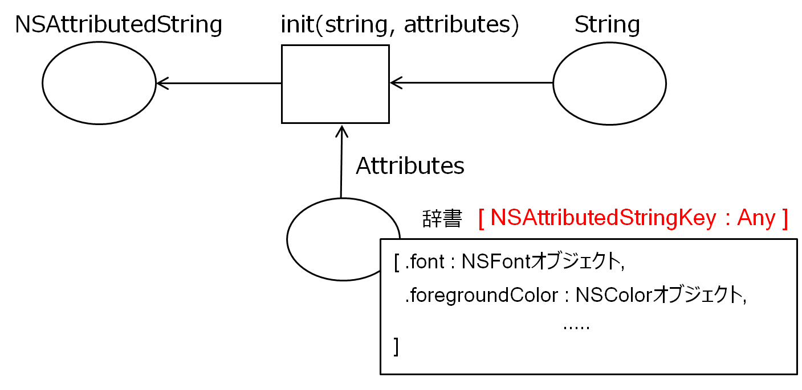
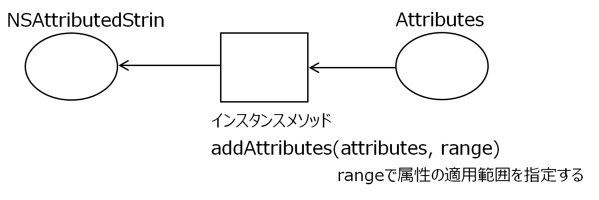

<DOCTYPE HTML>
<html id="mainhtml">
<head>
  <meta http-equiv="Content-Type" content="text/html; charset=utf-8">
  <title>属性付き文字列</title>
    <link rel="stylesheet" type="text/css" href="/lib/document.css">
</head>
<body id="mainbody">
<!-- ↓↓↓↓↓↓↓↓↓↓↓ -->
<script type="text/javascript" src="/lib/funcs2.js"></script>
<!-- ↑↑↑↑↑↑↑↑↑↑ -->
<div id="content">
<h2 class="lm100 tm20 bm0">属性付き文字列</h2>
<!-- 画像 -->
<a href="../HTMLofImage.php?filename=B16/attribute.png&title=属性付き文字列&width=600" target="_new">
</a>
<h2 class="lm100 tm30 rm60 bm0">
属性付き文字列の作成
</h2>
<!-- 画像 -->
<a href="/lib/HTMLofImage.html?filename=/data/B16/class1.png&title=class1&width=700" target="_new">
</a>
<!-- ソースコード -->
<iframe class="lm100 tm5" src="/lib/HTMLofText.html?filename=/data/B16/init.txt" width="550" height="230"></iframe>

<h2 class="lm100 tm30 rm60 bm0">
属性の追加
</h2>
<!-- 画像 -->
<a href="/lib/HTMLofImage.html?filename=/data/B16/class2.png&title=class2&width=700" target="_new">
</a>
<!-- ソースコード -->
<iframe class="lm100 tm5" src="/lib/HTMLofText.html?filename=/data/B16/add.txt" width="550" height="200"></iframe>
<h2 class="lm100 tm30 rm60 bm0">
サービスクラス
</h2>
<div class="lm100 tm0 rm60 bm0">
属性付き文字列を簡単なパラメータの指定だけで作成することができるサービスクラス（UATextAttribute）を作成してみた。このクラスで指定できる属性はフォントサイズ、文字の色に限定している。
</div>

<div class="lm100 tm10 rm60 bm0">
<a href="/lib/HTMLofText.html?filename=/data/B16/source/UATextAttribute.txt&title=UATextAttribute" target="_new">UATextAttribute</a>
</div>

<!-- ソースコード -->
<iframe class="lm100 tm5" src="/lib/HTMLofText.html?filename=/data/B16/display.txt" width="550" height="210"></iframe>
<div class="lm100 tm10 rm60 bm0">
アプリケーションの要求に合わせ、必要な属性の設定をサポートしたザービスクラスを作成すれば、冗長なコーディングを減らし、コーディングミスの可能性を低下させ、開発が容易になると考えられる。
</div>
<h3 class="lm100 tm20 rm60 bm0">
参考：フォント名の取得方法
</h3>
<!-- ソースコード -->
<iframe class="lm100 tm5" src="/lib/HTMLofText.html?filename=/data/B16/fontList.txt" width="550" height="210"></iframe>
<div class="bp40"></div><!-- 空白行 -->
<!----------------------------------------------->
</div><!-- end of content -->
<footer id="mainfooter">
<div class="tp10 bm10 bp10 textright"> <span class="rm500 font80"><a href="/lib/index2.html">メニューに戻る</a></span><span class="rm20 font80"><a href="#mainheader">TOPに戻る</a></span></div>
</footer>
<script type="text/javascript" src="/lib/access/access2.js"></script>
</body>
</html>


